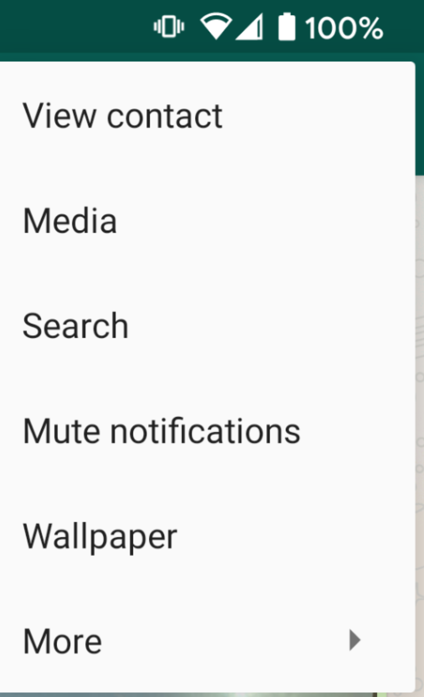
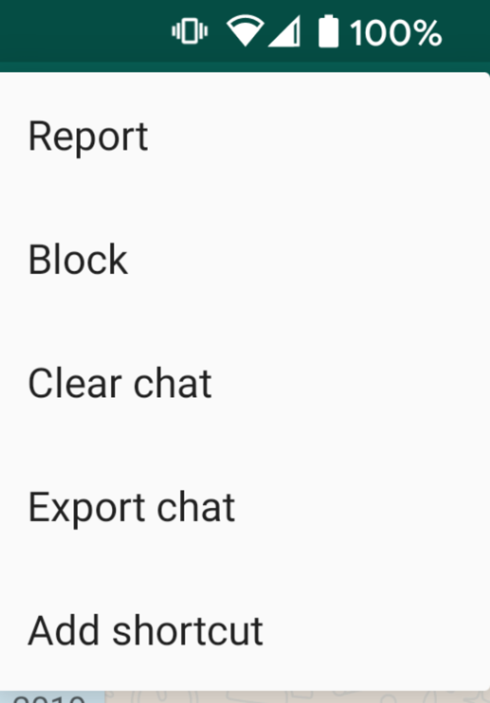
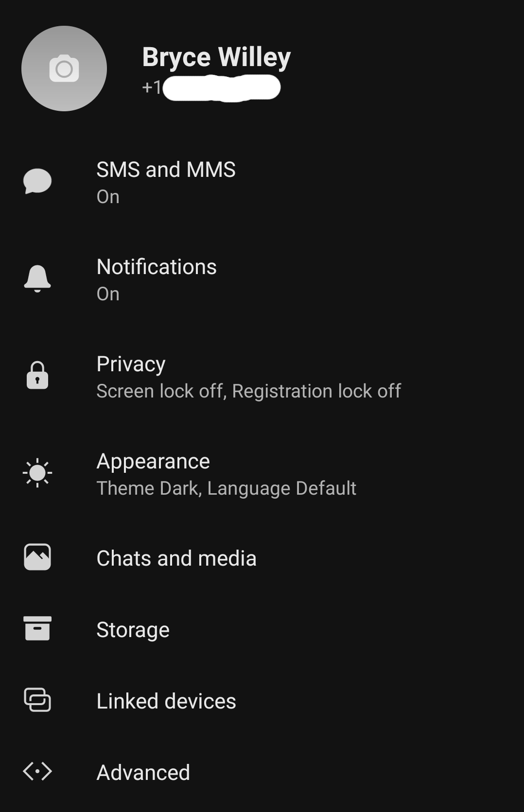
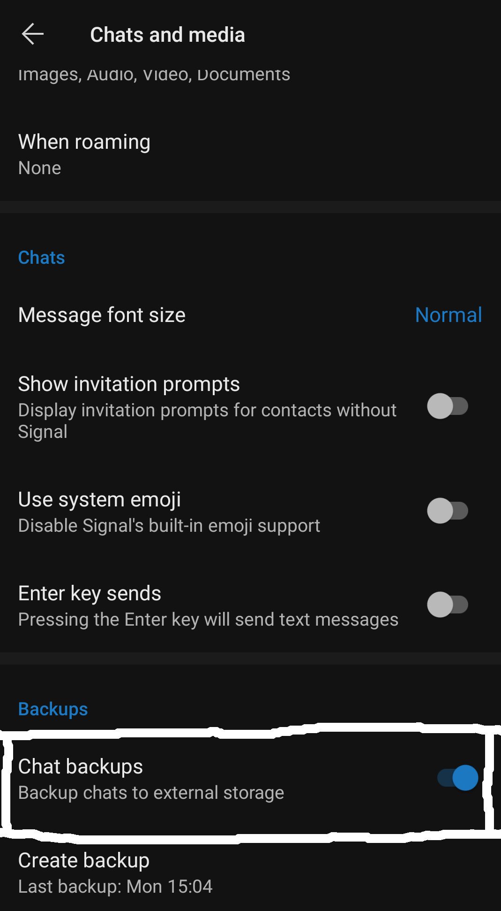

Whatsapp usage is pretty straight forward: just export the chat, then upload that file!
Unfortunately, there are a lot of known issues with date parsing.
The site is primarily tested with "M/DD/YYY HH:mm:ss", i.e. American 24 time format.
Change your phone's settings to the US if things aren't working for you, otherwise feel free to comment on the existing issue.
In a Whatsapp conversation, click the top menu, and select "More".

In the second menu, select "Export Chat".

You can then save the chat file anywhere you want: email it to yourself, save it to Google Drive, etc.
Then, upload that same file on the main page.
This entire process can be done on mobile (although the website look isn't quite optimized for mobile)!
Signal
This one is a bit complicated, but we'll go through step-by-step.
You'll need access to your Signal app (obiviously) and a computer.
Create a Signal Backup
In the app, press the menu button and go to Settings.
When in settings, press "Chats and Media".

Scroll to the bottom of the page and turn on "Chat Backups".

This will start the backup process, which takes several minutes.
Be sure to save the passphrase shown when you first turn on backups.
Download the Backup
On Android, you can go to the "Files" app.
The backup file will be in the main phone memory, in the Signal folder.
Once there, download the file to your computer.
I usually use Google Drive for this, but pick your poison.
Decrpyt the Backups
The best option for this as of early 2020 is signal-back.
Go to the latest release, and download the compiled binary for your system.
MacOS will be "Darwin", and Linux and Windows are named normally.
Once downloaded, open a terminal window, and run the following command:
./signal-back_linux_amd64 format -f CSV -o backup.csv signal-YYYY.backup
replacing "signal-YYYY.backup" with the name of your Signal backup download.
This will generate the CSV file that you'll give to the visualizer on the main page.
Find the Address and the IDs
When you upload the CSV file to the visualizer, you'll be asked for an "Address", and the names and IDs of the conversation participants.
The names are just to label the data for you to understand better, and aren't used anywhere else.
The address is the Signal CSV's term for "conversation".
IDs are numbers that uniquely identify participants in the conversation.
If you open the CSV file in a spreadsheet app (Excel, for example), you can look around for some conversations that you want to visualize (the message contents will be in the BODY column).
Most conversations will only have 1 ID per participant, but if you switched from text to Signal, or had to regenerate your Signal key, then there might be multiple.
You can enter as many IDs as necessary, comma separated, in the input.